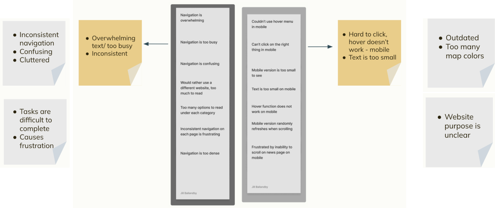
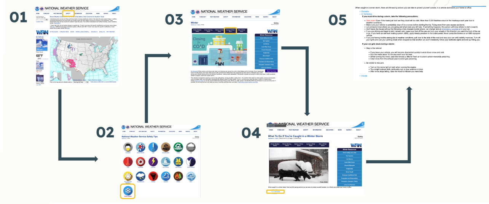
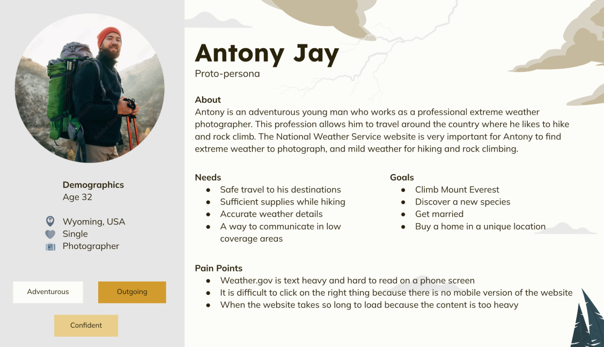

Weather.Gov Website Redesign
Project overview: The National Weather Service website is outdated and challenging to navigate. My redesign modernizes the interface, creating a pleasant and effective user experience. This will encourage users to return to the site and benefit from the information it provides.
Role/Team
This was an individual project, so I was the UX researcher and UI designer.
Tools
Figma, Google Sheets, Zoom
Client, Duration, Date
This was a 3 week project from start to finish
Goals
Easily identify safety information for extreme weather conditions and situations to protect themselves and loved ones. Quickly find current whether conditions on a mobile device while out in nature that are easily readable on a small screen. Reduced clutter and text on each page for faster load times for important graphs, radar images etc on a mobile device.
Research & Analysis
Key takeaways from interviewing users on the current site came down to outdated design, cluttered homepage and confusing navigation. It was important to identify the path the user had to take to get to certain areas of the website and how many clicks it took. To get to basic safety information about driving in a winter storm, it took users 4 steps and a lot of time looking for the right section to click on. 4 out of 5 users could not find what they were asked to find in testing.
Affinity Diagram
User Path
User Persona
The redesigned NWS website allows users to easily access it on their mobile devices while outside or on the go. It features a readable layout, large action items to reduce clicking errors, and an intuitive organization with important information prominently displayed.
Site Map
The navigation was streamlined to four options, plus a home option, to simplify the process for users to find what they need. The design prioritized simplification and organization.

Concepts, Sketching, Wireframes
To accommodate users viewing on small screens, I designed an image carousel for the news section with
large visuals that are easy to swipe through. I prioritized displaying the most important information
and provided users the option to explore further if desired, effectively minimizing unnecessary clutter.
Initially, red was a primary color in the palette, but my research revealed that users preferred red to
be reserved exclusively for warnings. Additionally, users favored having the weather displayed at the
top, with the news below, as the weather was more important to them. Consequently, I revised the
hierarchy from the first draft to better align with user preferences.
Visual Design & Prototype
The National Weather Service is a trusted source of information for users. Cleanliness and simplicity
reflect reliability and accuracy while the warm pops of yellow symbolize a sunny day to help the user
feel welcome.
I wanted a sans-serif font to maintain readability and clarity, emphasizing the importance of
organization and accuracy while the flared serif font grabs users attention for important headlines and
reflects a newspaper-like display of information that is dependable and trustworthy.